Автоматизированная система игра «Тетрис» с функциями
администратора
Введение
Автоматизированная система игра «Тетрис» с функциями администратора будет использоваться
для игры в «Тетрис» по классическим правилам. Администратор может настраивать и
конструировать фигуры для того или иного уровня сложности.
Приложение использует базу данных Room. Программная система совместима с Android 7 и
выше. Системные требования: … оперативной памяти, … жесткого диска.
Запуск приложения
Авторизация и регистрация пользователя
Данная программная система состоит из двух частей: роль игрока и роль администратора. При нажатии на
кнопку «Старт» в главном меню приложения, открывается окно для авторизации/регистрации пользователя.
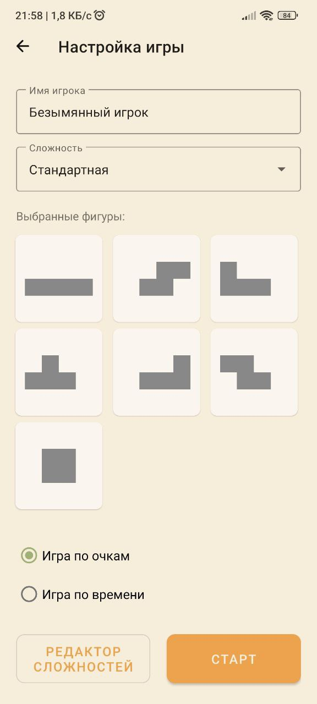
Если пользователь хочет войти в систему как администратор, то он должен нажать на кнопку «Редактор
сложностей» и ввести пароль.
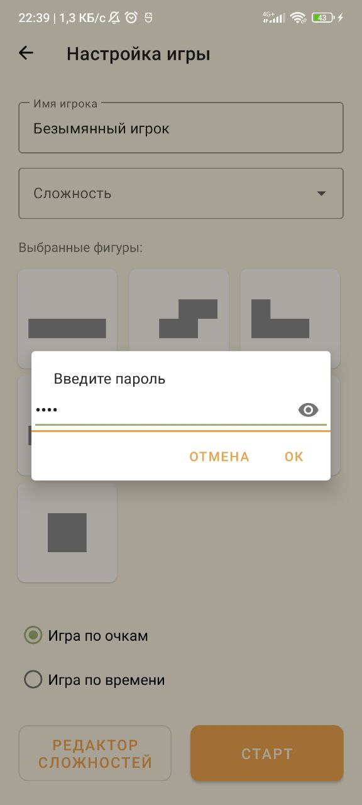
Если же пользователь хочет войти в систему в качестве игрока, то он должен заполнить поле «Имя
игрока», выбрать уровень сложности и способ подсчета результатов игры и нажать на кнопку «Старт».
Основными функциями администратора являются:
- создание, редактирование и удаление уровня сложности;
- конструирование фигуры, ей редактирование и удаление;
Основными функциями игрока являются:
- выбор уровня сложности;
- управление фигурами;
Роль «Администратор»
Редактирование уровня сложности
Администратор может работать с уровнями сложностей.
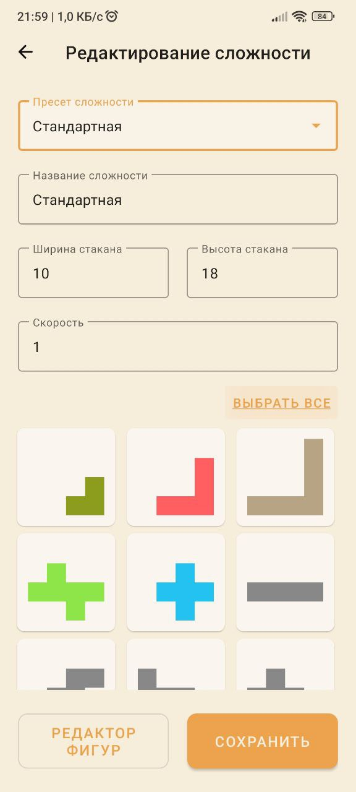
Создать уровень сложности
Для создания уровня сложности и сохранения его в базу администратору необходимо заполнить
необходимые поля и выбрать фигуры:
- выбрать пресет уровня сложности;
- ввести название уровня сложности;
- ввести ширину стакана;
- ввести высоту стакана;
- ввести изначальное значение скорости;
- выбрать фигуры из списка всех имеющихся в базе фигур.
После того, как все поля заполнены и фигуры выбраны, при нажатии на кнопку «Сохранить»
уровень сложности сохраняется в базу данных.
Изменение уровня сложности
Если же администратор хочет изменить уровень сложности, то он должен выбрать уровень в поле
пресет сложности и затем изменять уровень. В конце необходимо нажать кнопку «Сохранить».
Удаление уровня сложности
Если же администратор хочет удалить уровень сложности, то он должен выбрать уровень в поле
пресет сложности и затем нажать на «Удалить сложность». Появится окно подтверждения
действия, в котором администратор должен подтвердить свои действия, нажав на «Удалить», либо
отменить, нажав на «Отменить».
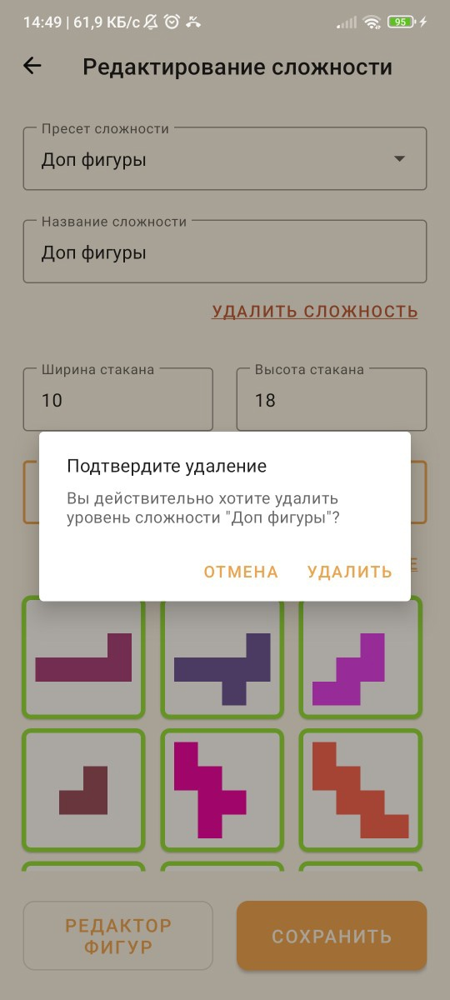
Конструирование фигуры
Создание фигуры
Администратор может сам конструировать игровые фигуры. Для этого уме необходимо нажать на
кнопку «Редактор фигур» в окне редактирования уровня сложности. После чего откроется окно
создания фигуры.
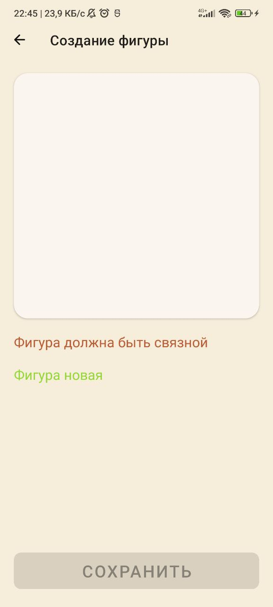
Администратор должен нажимать на клетки поля создания фигуры. Здесь имеются два индикатора,
показывающие, является ли создаваемая фигура уникальной и целостной.
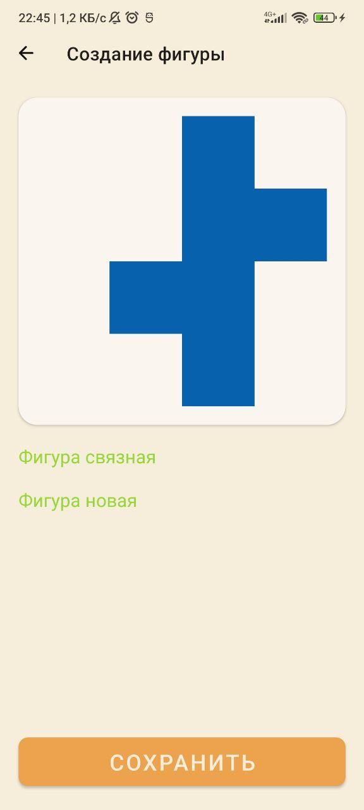
Как только оба индикатора загорятся зеленым и подтвердят целостность и уникальность фигуры,
кнопка «Сохранить» станет доступной для нажатия. Нажав на нее администратор сохранит фигуру
в базу данных.
Редактирование фигуры
Если администратор хочет изменить фигуру, то в окне редактирования уровней сложности ему
необходимо нажать на фигуру в списке фигур и удерживать, пока не появится окно выбора
дейтсвий
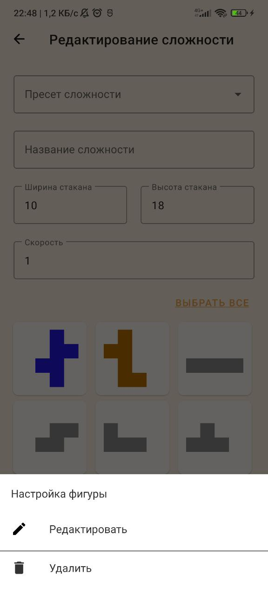
При нажатии на кнопку «Редактировать» открывается окно редактирования фигуры
Удаление фигуры
Если администратор хочет удалить фигуру, то в окне редактирования уровней сложности ему
необходимо нажать на фигуру в списке фигур и удерживать, пока не появится окно выбора
дейтсвий
При нажатии на кнопку «Удалить» открывается окно подтверждения действия
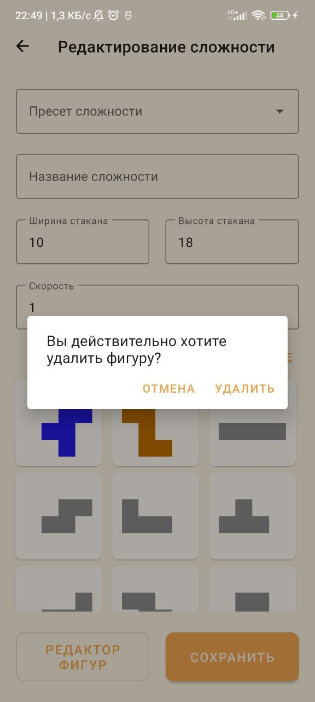
Администратор должен подтвердить свои действия, нажав на «Удалить», либо отменить, нажав на
«Отменить».
Роль «Игрок»
После входа в систему в качестве игрока, открывается окно игры.
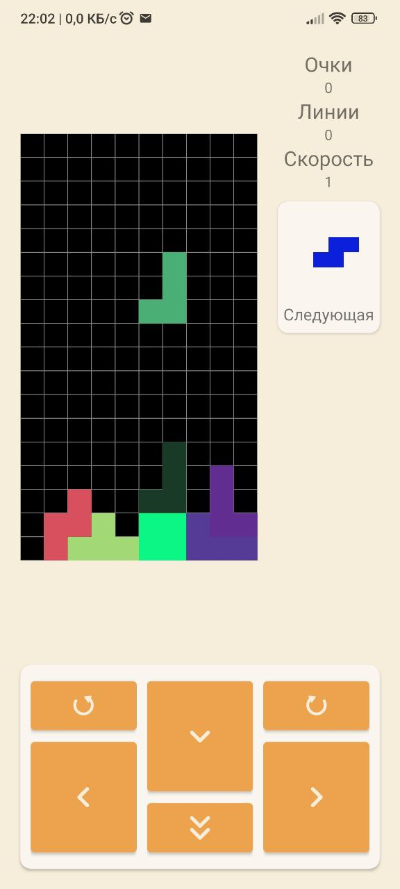
Игрок может нажимать на кнопки для перемещения или поворота фигуры, чтобы передвигать ее,
собирая ряды.
Игрок может видеть свои результаты и следующую фигуру справа от игрового поля.
После того, как фигуры достигли вершины игрового поля, и игра прекратилась, появляется окно
с предложением игроку сыграть еще раз.
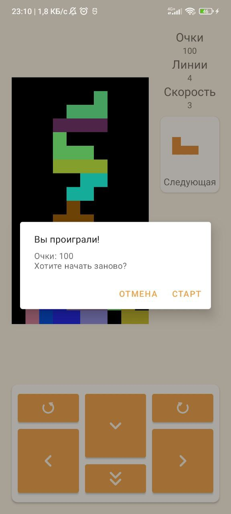
При нажатии на кнопку «СТАРТ» игра начинается сначала. При нажатии на кнопку «ОТМЕНА» игра
завершается, и открывается окно авторизации и регистрации пользователя.
Главное меню
В главном меню имеется пять кнопок: «Старт», «Статистика», «Настройки», «Информация» и «О
разработчиках».
При нажатии на кнопку «Информация», открывается окно со справочной информацией.
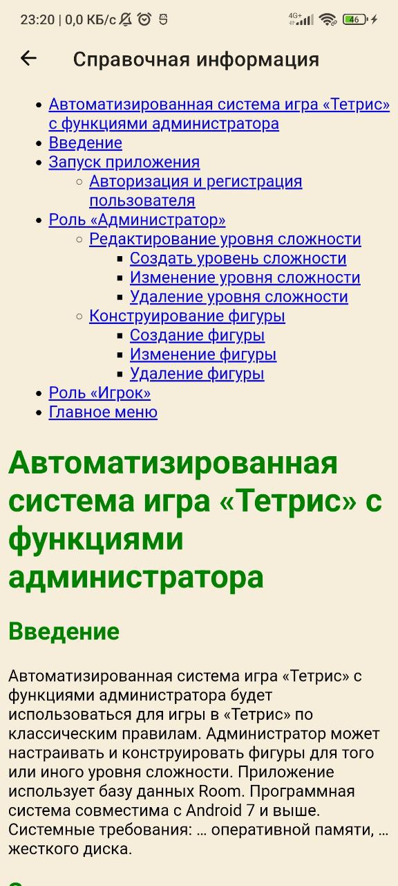
При нажатии на кнопку «О разрабочиках», открывается окно с информацией о разработчиках.
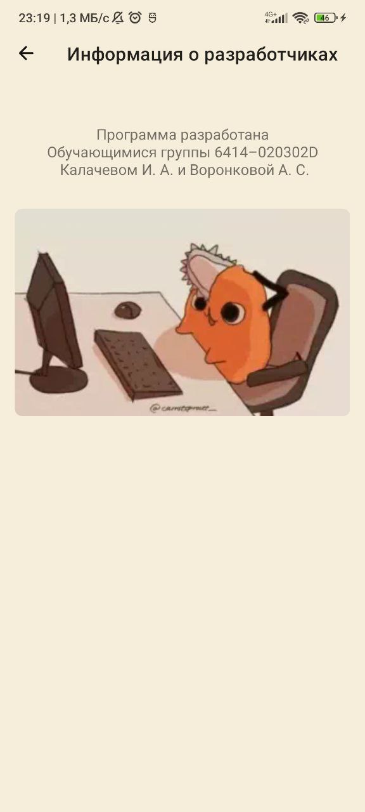
При нажатии на кнопку «Статистика», открывается окно со статистикой игры, в котором можно выбрать
критерий просмотра: по времени или по очкам.
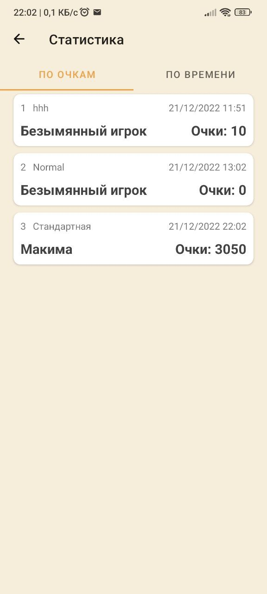
При нажатии на кнопку «Настройки», открывается окно с настройками игры.
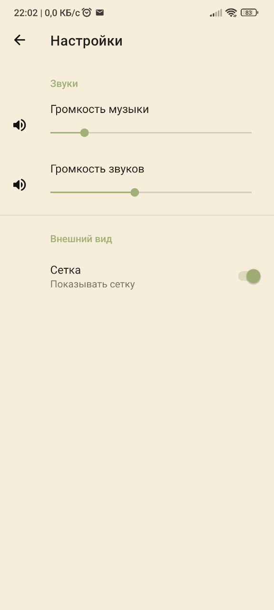
Пользователь может настроить уровень громкости музыки и уровень громкости звуков, передвигая
ползунки.
Также пользователь может включить или же выключить отображение сетки игрового поля.
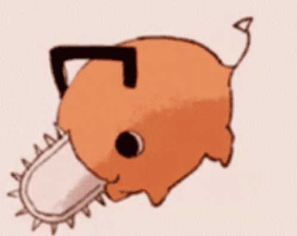